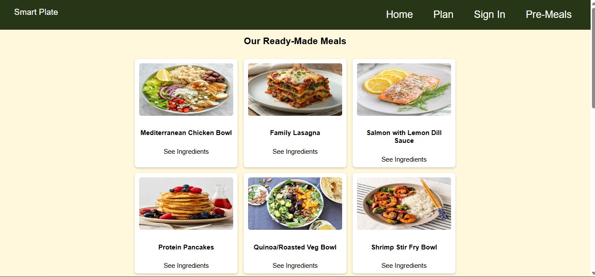
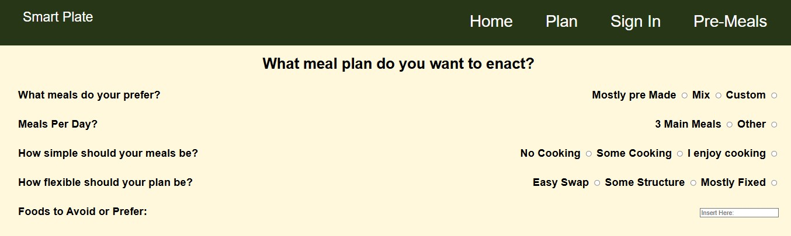
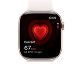

SmartPlate
- SmartPlate is a nutritional-focused website which will help individuals build balanced
meal plans, understand their nutritional content, look for proper information regarding
meals and use tools that will improve their eating habits.
- For this project, I've created some HTML code for some of the pages, such as the
Ready-Made Meals page and the Survey Page.
- I also created the CSS code for its design and its background. I also added some
Bootstrap into the CSS code.

The Pre-Made Meals page I've built

The Survey page I've built
WorkBeat
- This system is used to track employees' health and well-being, including stress levels
and heart rate
- This system will include a watch, in which employees will wear as they're working and it
will keep track whether employees are stress, tired, hungry, etc. This will alert managers to notify
doctors of any conditions that are happening during workplace from the employees' watch.
- This will also include a website with health and wellness tips.

The WorkBeat Watch